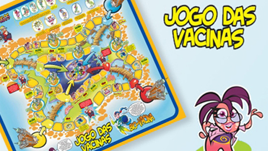
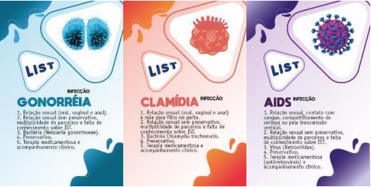

09/10/2023
Sobre
"Pandemic 2" é um jogo estratégico onde os jogadores criam um patógeno (como um vírus ou bactéria) e tentam espalhá-lo globalmente. Os jogadores enfrentam resistência médica e governamental à medida que o patógeno se espalha, o que destaca os desafios enfrentados no controle de epidemias e pode promover a conscientização sobre as medidas tomadas na vida real para conter surtos.
Habilidades envolvidas ao jogar
Dentro da faixa etária recomendada e pelas suas características e mecânicas de jogo, Pandemic Segunda Edição contribui para exercitar as seguintes habilidades:
- Cooperação
- Planejamento
- Decisão
Além disso, de uma forma geral todos os jogos podem colaborar para o desenvolvimento de habilidades sociais e intelectuais.
Leia Mais...
09/10/2023

Introdução
"Plague Inc." é um jogo de estratégia desenvolvido pela Ndemic Creations e lançado em 2012. Este jogo envolvente desafia os jogadores a assumirem o papel de criadores de patógenos e a tentarem erradicar a população mundial por meio de um agente patogênico mortal. Além disso, a expansão "Plague Inc: Evolved" expande a experiência, aprimorando os gráficos e adicionando novos recursos para os jogadores explorarem.
Descrição do Jogo
Em "Plague Inc.", os jogadores enfrentam a complexa tarefa de disseminar uma infecção mortal em escala global. O objetivo é espalhar o patógeno e superar as medidas de contenção implementadas pelas autoridades de saúde. Ao longo do jogo, os jogadores devem tomar decisões estratégicas, como a evolução do agente patogênico, para maximizar a eficácia da infecção. Obstáculos, como resistência a medicamentos, mudanças climáticas, quarentenas e esforços de pesquisa médica, tornam o desafio ainda mais complexo.
Expansão "Plague Inc: Evolved"
Além do jogo original, "Plague Inc: Evolved" é uma expansão que aprimora a experiência do jogador. Essa expansão oferece gráficos melhorados e recursos adicionais em comparação com a versão original, permitindo que os jogadores explorem ainda mais a criação de pandemias letais.
Leia Mais...
09/10/2023

Sobre
A correta higienização das mãos é uma das principais estratégias para prevenir a infecção pelo novo coronavírus e combater diversas doenças causadas por microrganismos, como gripe, diarreia e hepatite A. Pesquisadores do Instituto Oswaldo Cruz (IOC/Fiocruz) alertam que negligenciar esse hábito simples, mas vital, pode ter sérias consequências para a saúde.
Descrição do Jogo
Para promover a conscientização sobre a importância da higienização das mãos, os pesquisadores do IOC/Fiocruz, Tânia Zaverucha do Valle (do Laboratório de Imunomodulação e Protozoologia) e Gabriel Limaverde Sousa (do Laboratório de Esquistossomose Experimental), idealizaram o jogo "Hiji Sushi." Neste jogo, os jogadores são transportados para um cenário de restaurante de culinária japonesa, onde o desafio não se limita apenas à preparação rápida e eficiente de refeições, mas também à atenção meticulosa à lavagem das mãos.
O jogo enfatiza que a pontuação só aumenta quando os jogadores seguem corretamente o processo de higienização das mãos, incluindo o uso de água e sabão e a realização de movimentos que cobrem todas as partes das mãos. Essa abordagem lúdica serve como um lembrete constante de que a higienização das mãos é essencial para evitar problemas de saúde, como a intoxicação dos "clientes" do restaurante.
Leia Mais...
09/10/2023

Sobre
No esforço de tornar o aprendizado sobre vacinas uma experiência cativante e descomplicada, o Instituto de Tecnologia em Imunobiológicos, Bio-Manguinhos, em colaboração com o Museu da Vida da Casa de Oswaldo Cruz (COC/Fiocruz), apresenta o "Jogo das Vacinas." Este jogo tem como objetivo educar sobre a importância das vacinas, enfatizando sua relevância na prevenção de doenças. A iniciativa tem como público-alvo crianças e adolescentes e foi lançada na Vila Olímpica de Santa Cruz (RJ) no dia 6 de maio.
Descrição do Jogo
O "Jogo das Vacinas" é uma atividade lúdica e educativa na qual todos os participantes são convidados a ser "vacinados" para se proteger contra doenças antes que o tempo se esgote. A ação foi realizada até 9 de maio e direcionada a estudantes, professores, educadores e profissionais de saúde. A atividade faz parte do projeto "Ciência Móvel," um museu itinerante que tem levado exposições, jogos, equipamentos interativos, multimídias, oficinas e outras atividades a municípios da Região Sudeste do Brasil, beneficiando cerca de 600 mil pessoas ao longo de sete anos.
O local de lançamento do jogo, Santa Cruz, foi escolhido devido à estreita relação do Instituto com a comunidade local e as autoridades da região. Neste contexto, a Fiocruz está construindo o Novo Centro de Processamento Final (NCPFI), um complexo que terá capacidade para produzir até 600 milhões de doses de vacinas e frascos de biofármacos anualmente, a partir de 2018.
Parcerias e Objetivos
O "Jogo das Vacinas" é resultado da parceria entre Bio-Manguinhos, Casa de Oswaldo Cruz (COC/Fiocruz) e o Projeto Ciência Móvel - Vida e Saúde para Todos. A iniciativa visa disseminar informações sobre vacinação, indo além dos centros urbanos, com o intuito de sensibilizar jovens e crianças sobre a importância das vacinas, em conformidade com o Calendário Nacional de Imunizações. O diretor de Bio-Manguinhos, Artur Roberto Couto, ressalta o compromisso da Bio-Manguinhos/Fiocruz na promoção da saúde e cidadania, destacando o papel fundamental deste projeto.
Marcus Soares, educador do Museu da Vida e coordenador do projeto Ciência Móvel, enfatiza a natureza coletiva do "Jogo das Vacinas." Este desafio educativo é projetado para que os grupos colaborem para garantir que todos sejam vacinados e protegidos contra várias doenças, seguindo a proposta do programa nacional de imunização do Ministério da Saúde.
O projeto "Ciência Móvel - Vida e Saúde para Todos," aprovado pelo Ministério da Cultura, conta com o apoio da Fundação Centro de Ciências e Educação Superior a Distância do Estado do Rio de Janeiro (Cecierj), Bio-Manguinhos e o patrocínio da Sanofi e IBM.
Leia Mais...
09/10/2023

Sobre
O jogo educativo "LIST - Livre de Infecção Sexualmente Transmissível" foi criado com o propósito de oferecer uma abordagem envolvente e educativa para o aprendizado sobre infecções sexualmente transmissíveis (ISTs), com ênfase no público adolescente. Esta iniciativa representa uma inovação na promoção do conhecimento sobre os riscos e a prevenção de ISTs, bem como na promoção do autocuidado.
Principais Características do Jogo "LIST"
Abordagem Lúdica: O jogo incorpora elementos lúdicos, tornando o processo de aprendizado mais atrativo para os adolescentes. A abordagem interativa, presente em um ambiente de jogo, visa tornar o aprendizado mais agradável e acessível.
Tópicos Relevantes: O jogo aborda tópicos essenciais relacionados a ISTs, incluindo meios de transmissão, situações de risco, agentes patógenos, e a importância do uso de preservativos para a prevenção e o tratamento. As informações são apresentadas de maneira clara e compreensível para o público adolescente.
Conhecimento e Autocuidado: O jogo visa ampliar o conhecimento dos adolescentes sobre ISTs e, ao mesmo tempo, promover o conceito de autocuidado. Os jogadores aprendem a se proteger contra ISTs e a tomar decisões informadas relacionadas à sua saúde sexual.
Base em Evidências: A produção do jogo é fundamentada em evidências, o que significa que as informações e abordagens utilizadas são respaldadas por pesquisas e conhecimentos atualizados na área de saúde e educação.
Uso de Tecnologia: O jogo aproveita a tecnologia para criar uma experiência educativa dinâmica e interativa. Os adolescentes podem acessá-lo em dispositivos eletrônicos, como smartphones, tablets ou computadores, tornando-o facilmente acessível.
Enfoque na Prevenção: Além de informar sobre ISTs, o jogo coloca grande ênfase na prevenção. Ele encoraja os jogadores a adotar práticas de sexo seguro e a tomar medidas para proteger sua saúde sexual.
Potencial Educativo: Profissionais de saúde, educadores e instituições de ensino podem usar o jogo como uma ferramenta valiosa para aulas de educação sexual e conscientização sobre ISTs.
Leia Mais...
09/10/2023
Sobre
O "Negligência Mortal" é um jogo educativo que permite que estudantes com 12 anos ou mais atuem como investigadores para estudar quatro doenças comuns, mas muitas vezes negligenciadas, no Brasil: malária, doença de Chagas, esquistossomose e leishmaniose.
Uma característica intrigante do jogo é que ele tenta retratar a realidade das populações ribeirinhas e de áreas rurais, regiões com alta incidência de doenças negligenciadas. A personagem principal do jogo é uma médica epidemiologista chamada Odete. A missão é descobrir qual doença foi contraída por uma jornalista norte-americana durante sua visita ao Brasil.
Para coletar as informações necessárias, o jogador deve "viajar" pelos locais visitados pela jornalista em diferentes estados. É necessário conversar com a população, anotar os sintomas das doenças e analisar o ambiente. Para vencer o desafio, é preciso relacionar os dados obtidos com as doenças correspondentes.
De acordo com Beltramini, a ideia de criar o jogo surgiu da necessidade de adaptar a maneira como os conteúdos importantes no campo das ciências da saúde são ensinados. Nas escolas, geralmente, a temática é apresentada com foco exclusivo na transmissão, ciclos, sintomas e profilaxia, sem que os estudantes consigam aplicar esses conhecimentos em sua vida cotidiana. Além disso, raramente se considera que a prevenção de doenças pode ser influenciada por cuidados no ambiente.
Leia Mais...